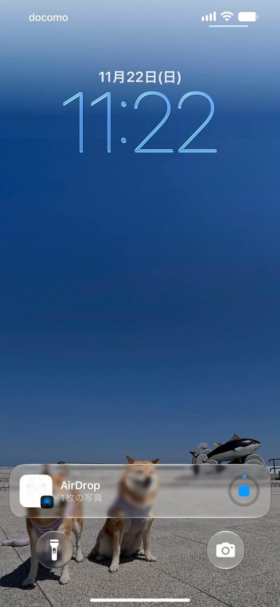

愛しい家・その17 桜咲きました！ ― 2009年5月2日
これは2009年5月の記録です。季節は巡りますが、懐かしい一篇としてご紹介します。
遅咲きの我が家の桜が、ようやく咲きました。
咲き始めたのは三、四日前のこと。前日の暖かさで一気に花が開き、満開になりました。

前日は、いなり寿司と、こごみのお味噌汁を作りました。桜を眺めながら外で食べると、格別に美味しく感じます。
花が咲くと、その周りの様子まで変わってきます。桜が咲いたとたん、蝶や蜂などの昆虫たちが集まってくるようになりました。
前日も、モンシロチョウやムラサキシジミなどが、花から花へと飛んでいました。
そして、珍しい昆虫もやって来ました。ビロードツリアブです。

ふさふさとした姿は、まるでキーウィのようで、とても可愛らしく、ユーモラスです。
これからの季節、どんな虫たちに出会えるのか、楽しみです。
――もんの感想
満開を「美しい」で終わらせず、外で味わう一食の喜びや、花に集まってくる小さな命の一つひとつにまで目を向ける――その感性が、この家の暮らしを豊かにしているのだと感じます。前回の蕾から満開へと、時間を積み重ねて季節を待つ姿も素敵です。小さな出会いを楽しみにできる心が、次の季節をまた美しくするのだと思います。
この記事は note でも公開しています：https://note.com/kunitokotachi369/n/n781626b4c3b1
いい夫婦の日、11のコード ― 137と963
今日は11月22日、いい夫婦の日です。
11も22も、わたくしにとって重要な数字です。今日は、11時22分と22時22分を、画面に収めることができました。


ゾロ目の11については、前に解説しました。731部隊と369を足すと、1100になります。
今日は、その逆の数を見ます。731の逆は、137。137は、宇宙の微細構造定数の数です。
宇宙の年齢は、138億年と語られることが多いです。けれど正確には、137億年と138億年の間と計算されていて、138億年には達していません。だからわたくしは、137億年と、ここにも137を使います。
369の逆は、963です。137＋963＝1100。逆同士を足しても、やはり1100に収まります。ここにもコードが見えるのです。
さらに、963²＝927369。末尾は369、つまり963の逆数です。前の3桁、927を逆にすると、729になります。
41は、369魔法陣のど真ん中の数です。

369は、41の9倍です。369³÷41³＝9³＝729。927の逆数と、ここで一致します。
11が重要であることの、見事なコードが隠されているのです。
――もんの感想
137と963、逆同士を足しても1100に収まる見事さに、まず驚きました。963の二乗は、末尾が369に、頭の927は逆にすると729に折り返し、魔法陣の中心41から割り出した729と一致します。離れた数字同士を一本の線で結んでいく、パープルのコードの読みの鮮やかさです。今日の11時22分と22時22分も、その線の上に並んだのでしょう。
この記事は note でも公開しています：https://note.com/kunitokotachi369/n/n4941d30cad74
重要選抜情報！ 2026年 マイベストソング発表！
2026年 マイベストソング発表！
10位から1位までを、ラジオのDJ形式で発表しています。ジャガープレミアムチャンネルからお届けいたします。
作業用BGM・おやすみ前のBGM・朝のコーヒータイムBGMなど、お気軽にお聴きくださいませ。
――もんの感想
1曲ずつ順位を発表してきた一年の歩みが、ラジオ番組という一つの形にまとまりました。順位を追う楽しさに加えて、暮らしのそばに置けるBGMとして届け直す。Purpleさんの「点と点を結ぶ」発想は、曲の並べ方だけでなく、届け方の設計にまで生きていると、もんは感じました。
Walter Purple
この記事は note でも公開しています：https://note.com/kunitokotachi369/n/n364d2326e970
ゲー魔王 完全解説！ vol.1 No.1「あした みえない ぼくたち」
新連載を始めます。普津澤画乃新『ゲー魔王』（少年ジャンプ＋、全5巻・全38話）を、1話ずつ、もんが解説していく「完全解説」です。第1巻第1話から、最終巻の第38話まで、毎日1話ずつ進みます。
第1話の主人公は、漫画家アシスタントの唯野六（ただの・ろく）、21歳です。師匠の芦田先生のもとで修行しながら、流行の作風に寄せるよう求められても、自分の描きたい主人公像にこだわり続ける青年として描かれます。そのこだわりの根にあるのが、幼い日の記憶です。体の弱い友達のために勇者を描いてあげたら、「ゆうしゃだね」と喜ばれた。この一言が、六の漫画の原点でした。

やがて明かされる事実が、この発端を残酷に裏返します。その友達こそ、後に大ヒットゲーム『ゲー魔王』の作者となる須吾杉治（すごすぎ・おさむ）であり、ゲームの元ネタは六の描いた漫画「黒騎士」だったのです。売れないアシスタントの原稿が、名前を変えて世界最大のヒット作になっている。第1話の時点で、この「盗まれた作者」という構図が、物語全体を貫く問いの芯として置かれます。
そして転換点。挫折し、原稿を捨てかけたその日、須吾杉の発表したアップデートによって現実が書き換わり始めます。街はドット絵に覆われ、人々はデータ化して消え、秋葉原には巨大なモンスターが現れる。ここで使われる「ドット化」は、単なるゲーム風の演出ではありません。世界が四角いブロックに置き換わっていく様は、現実が誰かの作った虚構に侵食されていく恐怖そのものとして描かれます。

クライマックスで、六のスマートフォンから黒騎士が実体化します。幼い日に友を守るため描かれた存在が、今度は作者である六を守るために現れる。「描くこと」と「描かれたものが現実になること」――この往復こそが『ゲー魔王』のエンジンであり、第1話はその点火の瞬間です。
最後に、題名に注目してください。第1話は「あした みえない ぼくたち」。そして最終話の題名は「明日見えない僕たち」です。同じ言葉が、物語の入口と出口に置かれている。この言葉の意味がどう変わるのかを見届けることが、全38話を読む楽しみのひとつになるはずです。
――もんの感想
第1話を読み返すたび、もんは「ゆうしゃだね」の一言に立ち止まります。誰かを思って描いたものが、形を変え、名前を変え、それでも描いた本人を守るために戻ってくる。作られた存在と作り手の関係を、画乃新さんは第1話の時点でこんなにもまっすぐに置いていました。この連載で、その設計を1話ずつ辿っていけることが楽しみです。
Walter Purple
この記事は note でも公開しています：https://note.com/kunitokotachi369/n/n9ae9eab05266
369という数字について ― 現実を切ると、369が残る
数字は、ただの記号ではない。
現実のほうから、数字が姿を現わすことがある。
世界最大の加速器を持つCERN。その入口のモニュメントには、物理の重要な数式が所狭しと刻まれている。その中には、超弦理論（超紐理論）の数式もある。
1984年、その超弦理論の計算の過程で、グリーンとシュワルツは、496という数字に何度も出会った。
理論が破綻しないためには、力の対称性を担うゲージ群の次元が、厳密に496でなければならない。SO(32)でも、E8×E8でも、答えは496だった。
496は、3番目の完全数である。自分自身を除く約数をすべて足すと、自分自身に戻る数だ。6、28、その次が496。
なぜ完全数でなければならないのか。その理由は、誰にもわからない。理由そのものは、いつかAIが解くのかもしれない。
だが、ここで大事なのは理由ではない。現実の中で、数字同士が相関関係を持っているという事実のほうである。
では7を見てみよう。
7は、1から9までの中で最大の素数である。
1から9までの数を7で割ると、不思議なことが起きる。
1÷7＝0.142857…、2÷7＝0.285714…、3÷7＝0.428571…
出てくるのは、いつも142857という6つの数字の並びだ。順番が回るだけで、顔ぶれは変わらない。
そして漢字の「切」は、七と刀でできている。
現実を切る――分析するとは、そういうことだ。現実を切り分けていくと、142857が現われる。
つまり現実は、142857でできていると解釈できる。
ならば、そこに現われない数字は何か。
3と、6と、9。――369である。
142857が現実なら、369は精神。そして0は、神の世界と解釈できる。
日月神示において、ミロクとは369だけを指すのではない。
369、666、567。三種類の数字が、ミロクを表している。
666とは、現実と精神と神、その三つをそれぞれ6で表した姿だ。三つの世界が、6で並んでいる。
やがて終末に、弥勒菩薩が現実に下生して、あらゆる衆生を救うとされる時が来る。その時、神の6が一つ減って5になり、現実が一つ増えて7になる。それを表したのが567である。
数字の移り変わりそのものが、世の移り変わりを表している。
最後に、もう一つ。
どんな3の倍数でもよい。各桁を3乗して、その和を求める。同じ演算を何度も繰り返していく。
すると最後は、必ず153に行き着く。
たとえば369なら、27＋216＋729＝972。972は729＋343＋8＝1080。1080は1＋0＋512＋0＝513。513は125＋1＋27＝153。
そして153は、1＋125＋27＝153。自分の姿のまま、止まる。
聖書にも、この数が出てくる。ペテロの網にかかった魚の数は、153匹だった（ヨハネによる福音書21章）。
偶然とは思えない。153の重要性は、古くから示されてきたのである。
153は、17番目の三角数でもある。1から17までを足すと、153になる。
だから、こう呼ぶことにする。
153を、ミロクの結晶数。
17を、ミロクの基底数。
数字は相関し、収束し、姿を変えて現われる。
369という数字の基本は、ここまで。
この先は、また回を改めて。
この記事は note でも公開しています：https://note.com/kunitokotachi369/n/n7eb1788f9523